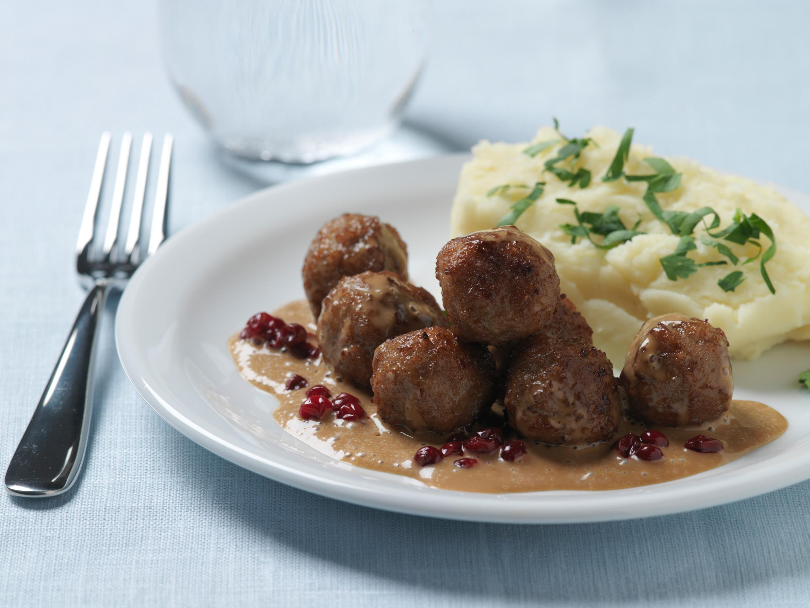

Swidish meatballs

You'll need the following ingredients:
- Some butter/oil for the pan
- 75 g (¾ cup) white breadcrumbs
- 500 g (18 oz) ground beef/pork mixture
- 250 ml (1¼ cup) milk
- 1 egg
- 1 onion
- Salt
- Pepper
- ground allspice
Steps to cook this badboy
- Soak the breadcrumbs in milk, for about 10 minutes.
- In the meantime dice the onion and fry gently in a little butter/olive oil without browning.
- Blend the ground meat mixture with the onion, egg, milk/breadcrumb mixture and the spices.
- Add salt and pepper. Continue blending for about 5-10 minutes.
Add a little water if the mixture feels too firm.
Check the taste by test-frying one meatball.
- Then shape small meatballs with the aid of two spoons or with your hands – it’s easier if you smear some butter in your hands to make the raw meatballs stick less. Place on clean plates.
- Brown a pat of butter in a frying pan, and as soon as it ‘goes quiet’ place the meatballs in the pan and let them brown on all sides.
- Shake the frying pan regularly.
- Fry until meatballs have the desired color.
Back to home page